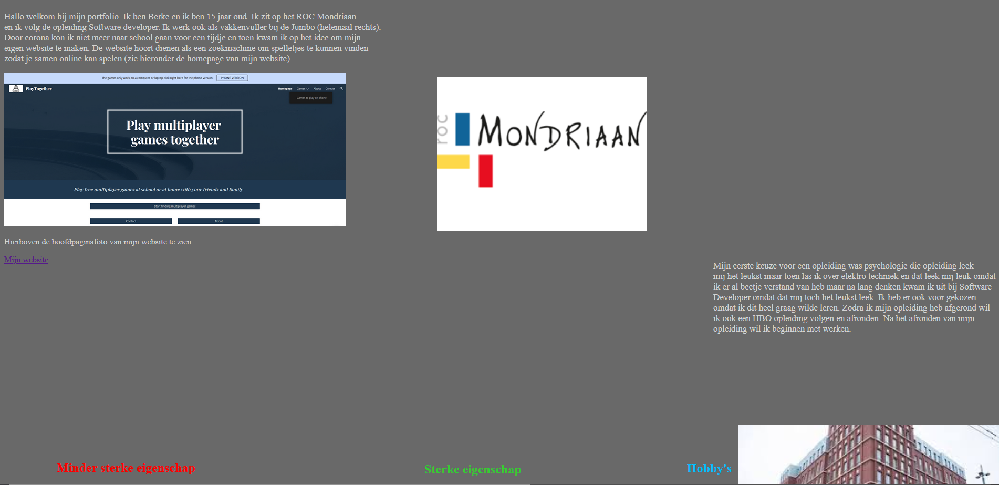
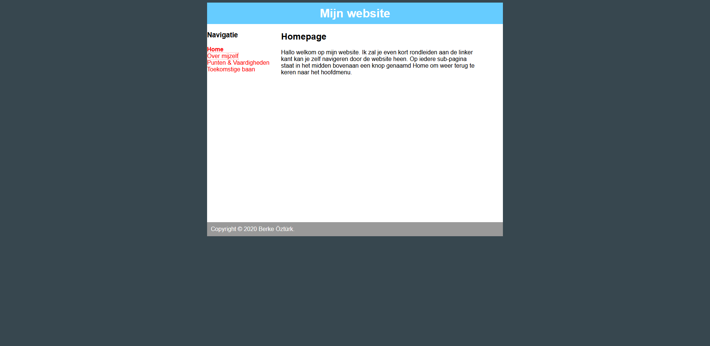
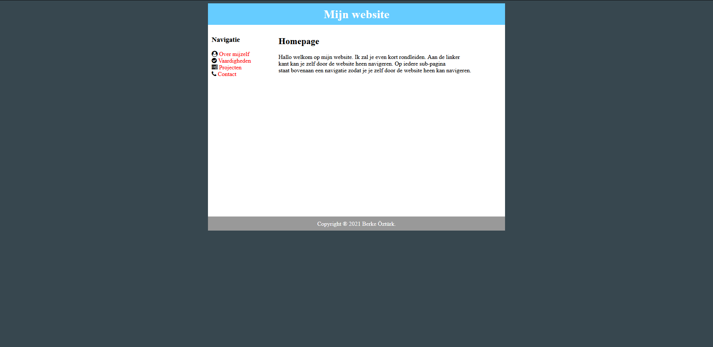
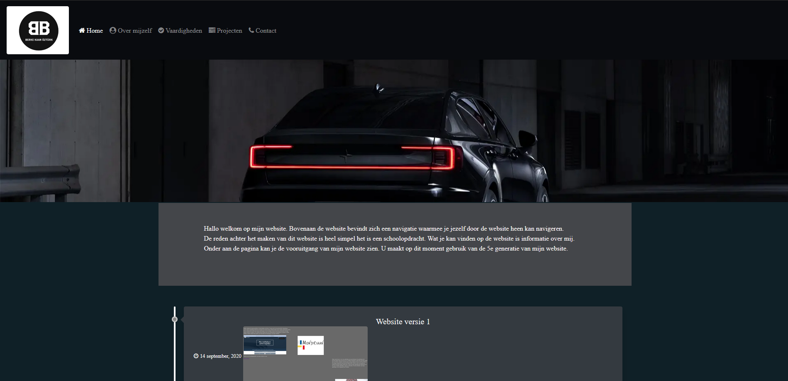
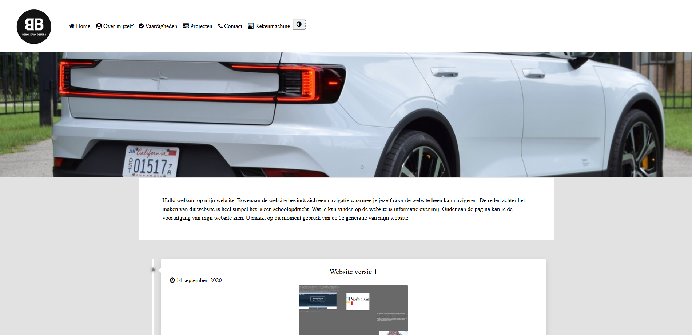

-
Website versie 1
14 september, 2020 In versie 1 begon mijn website als een one-page.
-
Website versie 2
28 september, 2020 In versie 2 kreeg mijn website sub-pagina’s.
-
Website versie 3
22 november, 2020
In versie 3 kregen de sub-pagina’s een andere design.
-
Website versie 4
12 februari, 2021 In versie 4 maakte ik gebruik van bootstrap
bij de sub-pagina’s. -
Website versie 5
20 februari, 2021 In versie 5 een nieuw design en maakte ik
ook gebruik van bootstrap bij de hoofdpagina. -
Website versie 6
4 april, 2021 In versie 6 maakte ik een 2e thema voor mijn website.